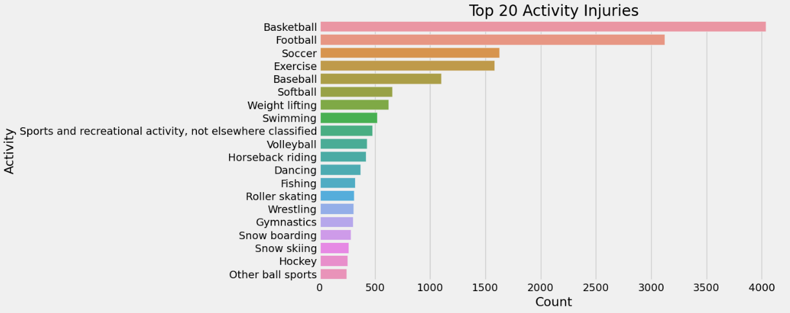

Why Wrestling is Not as Dangerous As You Think
By Sanjana Alluri | June 4, 2024
Three two-minute periods. That is all it takes for high school athletes to wrestle their way to a victory or loss. Despite the seemingly small window, it’s also more than enough time for injuries galore. Pulled knees, twisted shoulders, concussions, and cauliflower ear are just a few examples of injuries that can put a wrestler out of a tournament or even a full season. However, these types of injuries don’t necessarily make wrestling as dangerous as it seems.
When you think about sports that have a high risk of injury you’re probably thinking of contact sports like football or boxing. With its fair share of sprains, bruises, and head injuries, wrestling is no exception. However, as with any sport, some nuances may determine the nature of these injuries and perhaps better ways to prevent them. It begs the question: What are the most common types of injuries wrestlers get and how does that relate to what is being taught on the mat or done during a match? What are ways we can reduce the risk of injury by improving technique or form?
To begin to answer this question, it's good to start with data that represents the target population. The data I will be referencing includes over 2 million patient records from the U.S. National Electronic Injury Surveillance System (NEISS) from 2004 to 2016. Although this is an extremely large data source, I am only using records for sports and recreation-related injuries and have narrowed the analysis between the years 2009 and 2016. This was done to make calculations more efficient, and due to the large amount of data regardless, the accuracy of the conclusions made was not affected.
Addressing the Playing Field
The best way to understand what we’re working with is to answer the obvious question first: what is the most dangerous sport? The histogram in Figure 1 attempts to answer this question. The reality with medical data collection, especially with large nationwide databases like this one, is that records are often too specific for general use. There are hundreds of sports and activities patients participate in that lead to injury, so I narrowed the visual down to the top 20. Here you see that the most injury-prone sports are basketball, football, and soccer. Wrestling is at a surprising 15th place considering miscellaneous exercise is in the top 10.
Why is this the case? Wouldn’t wrestling be much higher up considering how high-contact it is? When we look at the sports at the top of Figure 1, we can begin to understand why this is not the case. Basketball, football, and soccer are all fast-paced sports with a lot of cardio involved. Maybe this has something to do with their high scores.
The number one injury when playing basketball is the ankle, which makes tremendous sense. A large part of the sport is being quick on your feet, which also applies to football. Ankle injuries are the 5th most common for football players according to Figure 3, but keep in mind finger injuries are most common due to the nature of football being a ball sport as well.
Figure 4 corroborates with Figures 2 and 3 in that leg injuries tend to be more common for these high-intensity running activities. In contrast, Figure 5 below shows that shoulder injuries are the most common for wrestlers, followed by the head, fingers, and knee. Notice that the frequency of injury is miles away from the top three sports, where counts in the high hundreds have decreased by at least 90 percent to a range below 50.
Understanding the Source
Now that we have a clear picture of what injuries in the sport of wrestling look like, we can deduce some possibilities of why these are the case. Firstly, shoulder injuries being the most common is not surprising at all. Most pinning combinations, aside from cradles, absolutely require some sort of manipulation of the opponent’s arm. Whether it be a hammerlock or a simple half-nelson, the shoulder is going to be engaged.
Additionally, head injuries are often in the form of concussions from brute force. This can happen anywhere but is most likely when wrestlers are in neutral positions and trying to set up and execute their shots. However, these head-related injuries are more likely to occur during practice when wrestlers are not wearing their headgear (equipment designed to prevent this).
Injury to the knees is common due to the number of shot setups that require a duck walk, which is where you take strides while squatting down and often use your knees to propel yourself forward. Wrestlers are in this position a lot when going for a blast double takedown, but building up from the bottom in the referee's position also requires strong knees as well. For a taste of some powerful knee action, take a look at this compilation of Jordan Burroughs attacking some mean double legs.
Prevention is Key
Believe it or not, these moves aren’t meant to cause these kinds of injuries. More often than not, injuries are caused by improper form, technique, and overall preparation before matches. Half Nelsons are not an excuse to dislocate a shoulder. The technique revolves around treating the elbow like a lever to create some separation from the mat, before sinking the head tight. This method is specifically used to prevent pulls and tears, while also using the laws of physics and torque to your advantage.

One big way wrestlers protect themselves from injury is by using headgear and a mouthguard. Contrary to popular belief, headgear protects the ears more than the head. Notice how ears were higher up on the list of injuries for wrestling compared to the top 3 injury sports? This is because it's common for wrestlers to get cauliflower ear, which is where the outer ear swells with fluid and deforms as a result of blunt force trauma. It is mandatory to wear headgear during matches, but not well enforced when it comes to practice and training (hence the frequent ear injuries).
Mouthguards are equally as important. Aside from preventing bitten cheeks or chipped teeth, their main contribution is preventing concussions. Quick movements like shooting up from a referee's position can cause severe impact on the jaw of the opponent that travels up to the skull and brain. Mouthguards help absorb this impact to prevent serious concussions and the debilitating symptoms that come with them.
The Takeaway
Every sport has a risk, but it depends on the athlete to put their safety first and participate with caution. Not only does this include training with intention and accuracy but also utilizing safety equipment when necessary. Wrestling, as intense as it is, is intentional in the way athletes should use takedowns and pinning combinations to take down their opponents. There is a reason why every move is taught the way it is after years of this sport’s evolution. Mastering the basics and focusing on accuracy more than volume is the best way to do it right and prevent injury in the process. So remember to wear your headgear, use your mouthguard, tie those laces, and happy wrestling!
Sources
https://www.visitcompletecare.com/blog/what-sport-has-the-most-injuries/https://www.sportsinjuryclinic.net/sport-injuries/head-face/ear-pain-injuries/cauliflower-ear
https://www.sportssafect.com/blog/are-mouth-guards-important-for-concussion-prevention